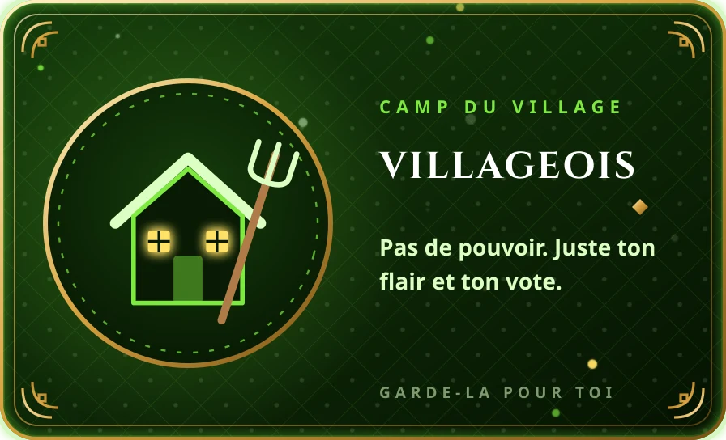
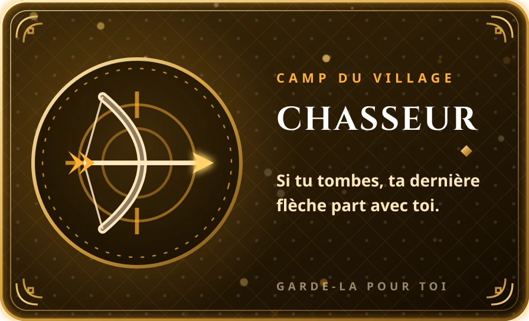
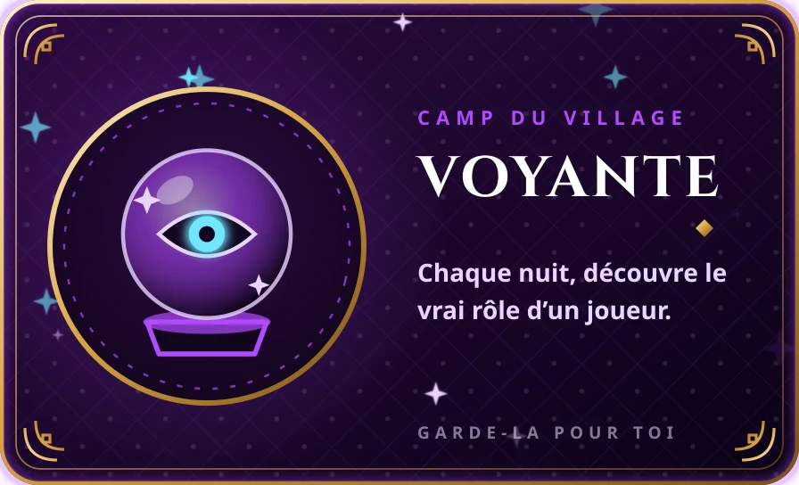
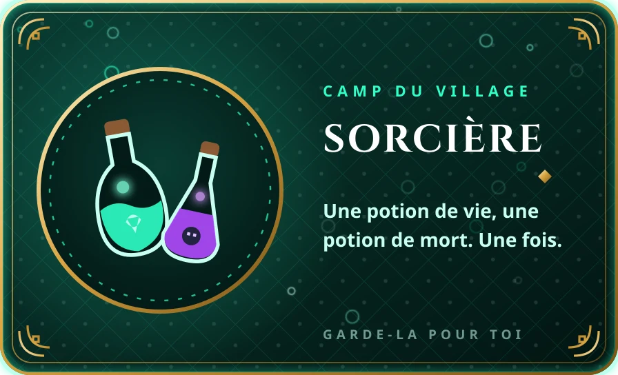
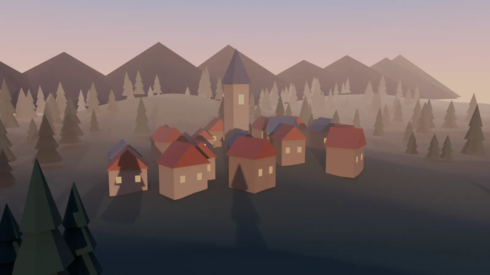

Le tribunal des sons
Chaque semaine, chaque membre dépose un son. L’IA repère les faux et les reposts, deux juges tranchent. /tribunal
PrologueIl était une fois un serveur Discord…
…où les salons s’endormaient avant même la tombée de la nuit.
Un soir, un gardien arriva au village.
Il répondait à toutes les questions, faisait entendre la musique de chacun, et menait les jeux jusqu’au bout de la nuit.
Le bot Discord qui réveille ton serveur : une IA, la musique Spotify, le loup-garou raconté à voix haute, un casino à jetons et une garde de nuit.
Table des chapitres
Comme dans /jeux › Histoire, c’est toi qui choisis la suite :
Chapitre I
1 · On lui parle
La veille d’un contrôle, Lina écrit au gardien comme elle écrirait à un ami.
Tout le monde peut l’utiliser. Dans le salon IA, il répond à chaque message ; ailleurs, il suffit de le mentionner.
2 · Un fil rien qu’à elle
Le gardien emmène la discussion dans un fil que seuls Lina et le staff peuvent lire.
Il garde la conversation en mémoire : on enchaîne les questions sans tout répéter.
3 · Il explique
Sans jargon, avec une image qui reste en tête.
Du niveau « j’ai dix ans » au niveau expert avec /explique. Aide au code avec /code.
4 · Il lit aussi
Lina envoie la photo de son exercice. Le gardien la lit et lui montre comment faire.
Il lit les images, les PDF, les fichiers et les pages web qu’on lui envoie.
Chapitre II
1 · Sur Spotify
Comme chaque soir, Lina a lancé Spotify sur son téléphone.
Rien à installer : le bot voit ce qu’elle écoute grâce à son statut Discord.
2 · Tout le serveur le voit
Dans le salon musique, un message montre le son, l’artiste et où elle en est. Il se met à jour tout seul.
À activer pour soi avec /musique › Partager mon Spotify.
3 · Et dans le vocal
Ses amis dans le vocal entendent exactement ce qu’elle écoute, calé à la seconde près.
Si Lina passe au son suivant, le bot suit.
4 · Un lien suffit
Un son, un album ou une playlist entière : /musique › Jouer un son, et le lien. Le panneau de contrôle apparaît.
Marche aussi avec Apple Music, YouTube, SoundCloud et Deezer. Effets 8D, slowed + reverb, nightcore, karaoké.
5 · Les paroles
Bouton 🎤 Paroles : les paroles défilent en rythme, comme dans l’appli Spotify.
Décalées ? Deux boutons les recalent par demi-seconde.
Chapitre III
Quand le soleil se couche, le gardien devient meneur de jeu. Il distribue les rôles en secret, réveille les loups, compte les votes, et raconte toute la partie à voix haute dans le vocal. Vous n’avez plus qu’à jouer.
1 · On se rassemble
Lina tape /jeux › Loup-garou. Chacun clique sur « Rejoindre ». Pas assez de monde ? Des bots complètent la table.
2 · En secret
La carte se retourne. Tu sais qui tu es, ce que tu dois faire, et qui sont tes complices si tu es un loup.
3 · La nuit tombe
Le narrateur le dit à voix haute. Les loups, la voyante et la sorcière agissent en secret, avec un bouton.
Le narrateur parle dans le vocal
4 · Les loups chassent
Seuls les loups voient ce menu. Ils voient aussi le choix des autres loups, pour se mettre d’accord.
5 · L’aube
Au matin, le gardien annonce qui est mort cette nuit, et quel était son rôle.
6 · Le village vote
On débat en vocal, puis on vote avec un menu. Le plus désigné est éliminé.
7 · La fin
Tous les rôles sont révélés. On relance une partie ?
👁 Seul toi peux voir ce message · Ignorer




Chapitre IV
Au village, quatre amis reçoivent chacun un mot secret. Trois ont le même. Le quatrième a un mot proche, et personne ne le prévient : l’intrus ne sait pas qu’il est l’intrus.
Chacun donne un indice sur son mot, sans le dire. Puis on vote pour démasquer celui dont le mot n’est pas le même.
Chapitre V
Au fond du village, une taverne ne ferme jamais. Son tenancier, Casinho, est un deuxième bot : on y joue avec des jetons, on mise avec des boutons, et chaque table dit franchement ce qu’elle rend.
Un casino de jetons fictifs dans ton serveur. Tape /casino, choisis une table, joue dans le message.
Ce que rend chaque table, sur 100 jetons misés
Chapitre VI
Quand le staff dort, le gardien veille. Si quelqu’un dépasse les bornes, un clic droit suffit : il lit le message, regarde ce qui s’est dit juste avant, et prévient le staff avec son avis.
Clic droit sur un message › Applications › Signaler au staff. L’IA analyse et le staff agit en un bouton.
Chaque semaine, chaque membre dépose un son. L’IA repère les faux et les reposts, deux juges tranchent. /tribunal
Deux sons validés s’affrontent. Tout le serveur vote pendant 24 heures, le gagnant devient Champion du Tribunal.
Rappels, sondages à boutons et quiz sur n’importe quel sujet, pour que le serveur ne s’endorme jamais.
Les veillées
Le loup-garou n’est qu’une des histoires du soir. Voici les autres jeux que le gardien anime tout seul, du blind test au freestyle.
Le bot passe des extraits en vocal, le premier qui trouve marque. Titre 2 pts, artiste 1 pt.
/jeux › Blind testLe son se coupe juste avant une phrase. Écris la suite avant les autres.
/jeux › Suite des parolesUn son passe : en quelle année est-il sorti ? Le plus proche marque aussi.
/jeux › Devine l’annéeDeux rappeurs, une instru, un jury IA qui note les rimes, le flow et les punchlines.
/jeux › FreestyleL’IA raconte une aventure dont vous êtes les héros, et c’est vous qui décidez de la suite.
/jeux › HistoireUn film, un animé ou un son de rap FR en emojis. Le premier qui trouve gagne.
/jeux › RébusQui a le plus de fans sur Deezer ? Enchaîne les bonnes réponses.
/jeux › Plus ou moinsTon équipe de 5 rappeurs, des points chaque lundi avec les vrais chiffres Deezer.
/jeux › Fantasy Rap
Et le jour se leva sur un serveur qui ne dormait plus.
Épilogue · Les offres
/serveur, choisis Offre du serveur, puis Essai gratuit 7 jours.Questions
Tu choisis une offre, on t’envoie le lien d’invitation, puis on règle le bot pour tes salons : salon IA, salon de jeux, vocal. Quelques minutes, sans rien coder.
Non. Le bot est hébergé en ligne et reste connecté jour et nuit, y compris dans le vocal.
Non. Le bot lit ce que tu écoutes grâce à ton statut Discord (« Écoute Spotify »). Il suffit d’avoir relié Spotify à ton compte Discord.
Jamais. Les jetons sont fictifs : on ne peut ni les acheter ni les retirer. C’est un jeu entre membres.
Oui : l’argot, les fautes, les abréviations. Elle lit aussi les images, les PDF et les liens.
Oui, dès le Veilleur : ton logo, ta couleur et ton nom sur les panneaux, tickets, annonces et rapports. Avec le Sur mesure, le bot prend aussi ton nom et ton avatar.
Une fois le bot invité, tape /serveur › Offre du serveur › Essai gratuit 7 jours. Tout le Gardien est débloqué pendant 7 jours, une fois par serveur, sans carte bancaire.
Écris-nous sur Discord : on l’installe avec toi, et tu testes tout avant de payer.
Discord : ton-pseudo